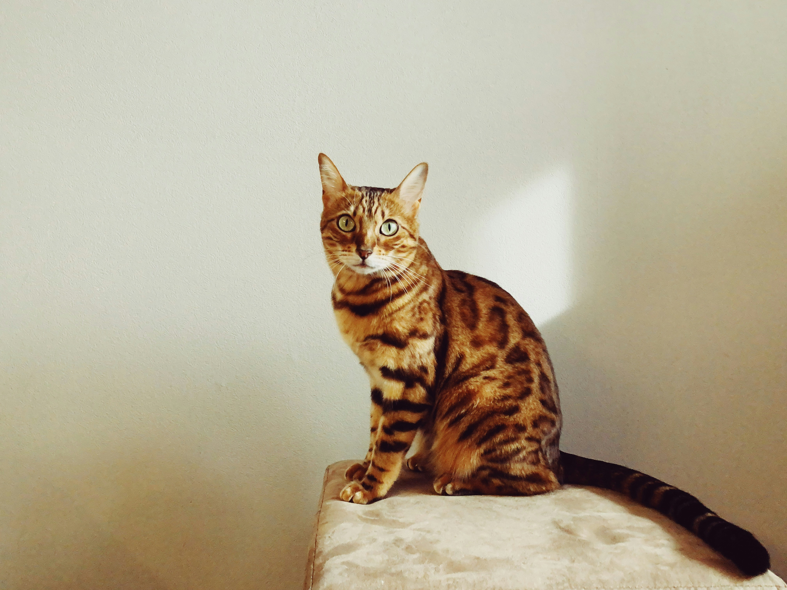
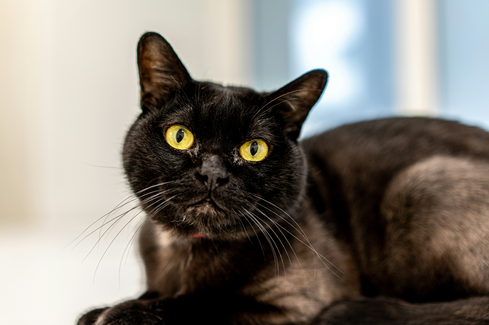
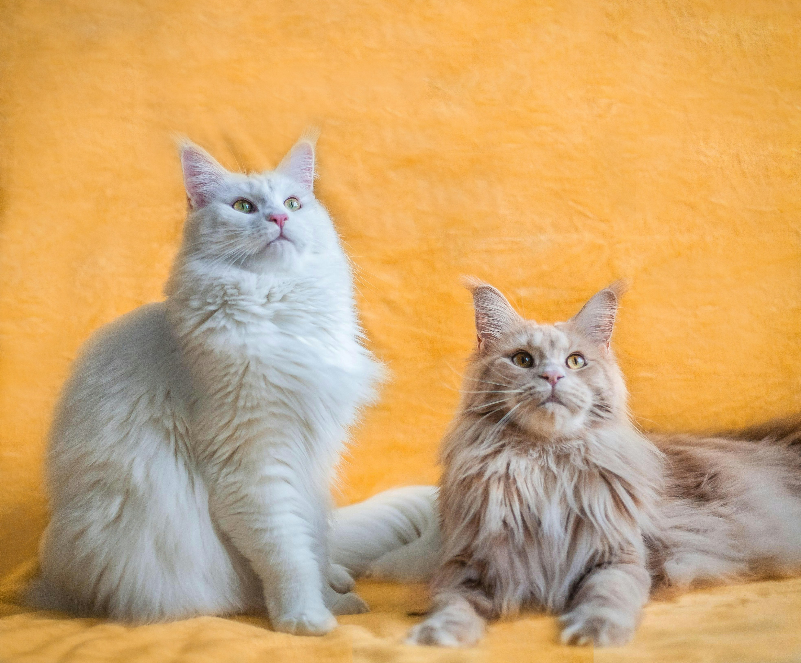
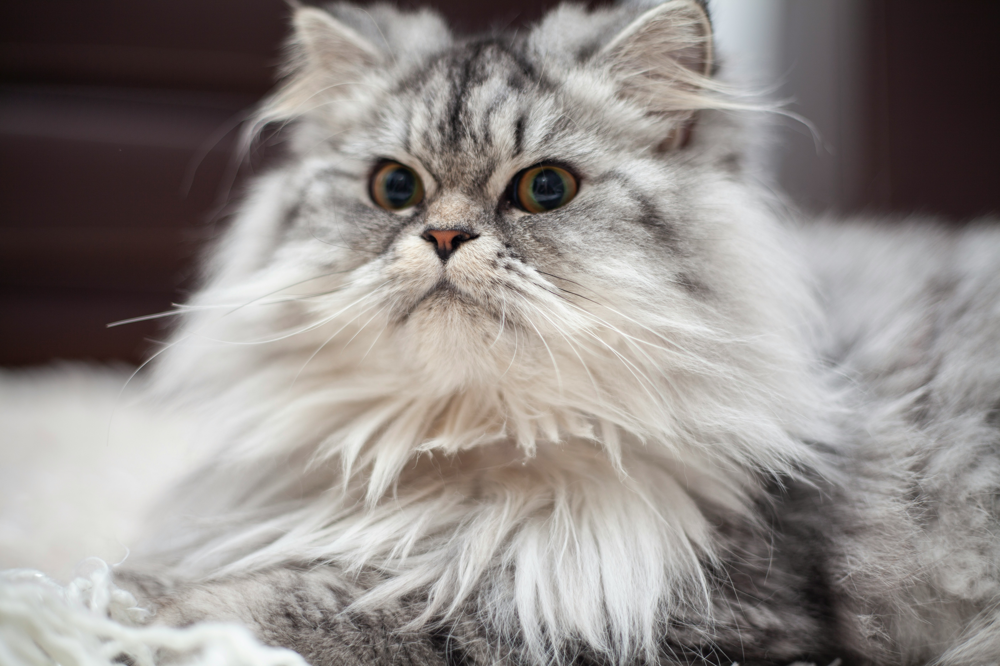
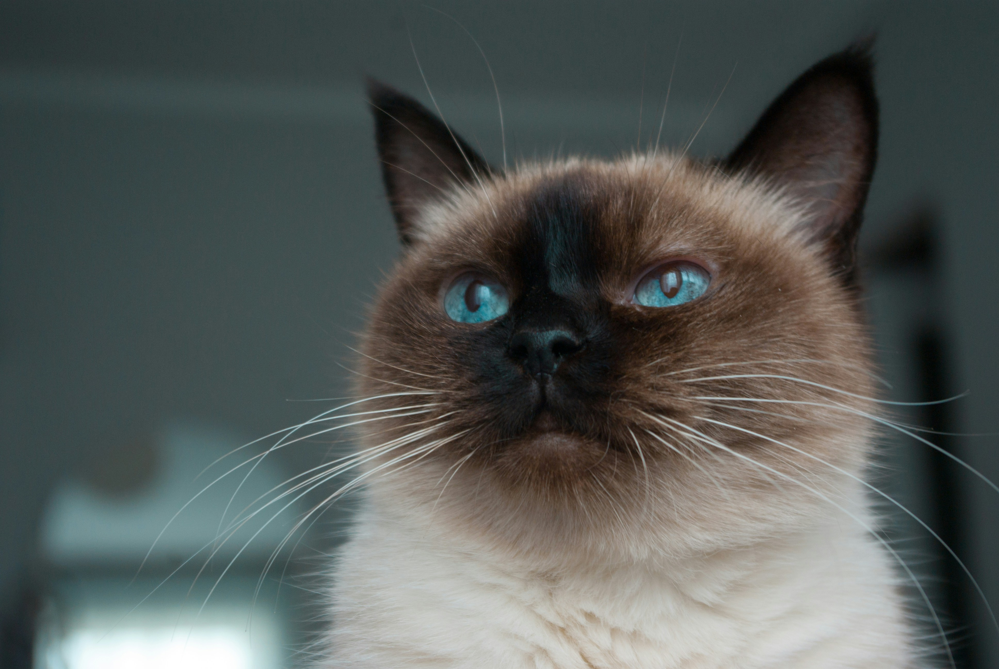
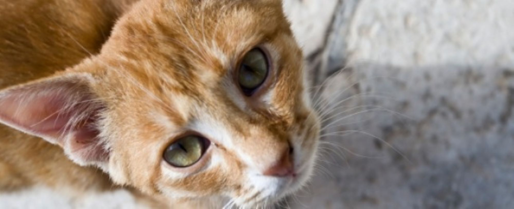

Gallery of Fame: Most Popular Indian Cat Breeds
1. Bengal Cat

Descendants of the Wild Asian Leopard Cat, Bengal Cats are one of the most intelligent and elegant domestic cat breeds in India. They are known to be very talkative and expressive. They also need a LOT of exercise, so keep up with their energy levels—build a play-area for them, take them out for walks, and get interactive cat toys!
Suitable for Indian climate
Life expectancy: 10 - 16 years
2. Bombay Cat

Bombay Cats are one of the most affectionate and smart small cat breeds—it’s adorable to see how confidently they demand pets! With their sleek black coats and striking eyes, they are beautiful, like mini Black Panthers. They require minimum grooming and happily adapt to homes of any size. It’s super easy to train them too, with a few yummy cat treats!
Suitable for Indian climate
Life expectancy: 9-13 years
3. Maine Coon

Maine Coons are super friendly, sociable and lovingly called ‘gentle giants’. They can grow up to 10 kg and 40 inches in size. They adapt to domestic living easily, and are a great choice for families with children. However, due to their longer coat, it is important to keep them cool, well-groomed and hydrated in summer.
Suitable for Indian climate
Life expectancy: 12-15 years
4. Persian Cat

Persian Cats are one of the cutest cat breeds out there! They have a gorgeous coat, beautiful eyes and chubby cheeks. They are lovely indoor cats who love watching the world go by. They want to be the centre of your attention, but are equally content in their own company. Be prepared to groom and pamper them daily!
Suitable for Indian climate
Life expectancy: 10-17 years
5. Siamese Cat

Out of all the types of cat breeds, Siamese Cats have historically been the most popular pets! They are independent, sociable, loyal and very expressive. Their confident, loud meows will echo through your home. Fun fact: the colour of their coat changes with external temperatures!
Suitable for Indian climate
Life expectancy: 10-12 years
6. Himalayan Cat

Himalayan Cats are gentle and quiet balls of fur who make excellent indoor pets. They love a good cuddle session, but are also happy playing and keeping themselves entertained. However, they are notoriously fussy eaters and prone to health troubles. Understand their diets, and invest in quality cat food.
Suitable for Indian climate
Life expectancy: 9-15 years
7. Abyssinian

If you are looking for good cat breeds who are friendly with children as well as other cats or pets, the Abyssinian is your perfect companion! They are adored for their playful and inquisitive spirits, and short, low-maintenance coats. Just keep them active and engaged with stimulating cat toys!
Suitable for Indian climate
Life expectancy: 9-15 years
8. Indian (Indie) Cat

Indian cats are survivors, showing resilience and practicality. They might be aloof initially, but they become charming once trust is built through food. While they love being independent outdoors, they do enjoy indoor human company. They would tolerate fellow furry friends at home, as they do have an adaptable and curious nature. Their tenacity shines through, adapting extremely well to different situations.
Suitable for Indian climate
Life expectancy: 10-15 years